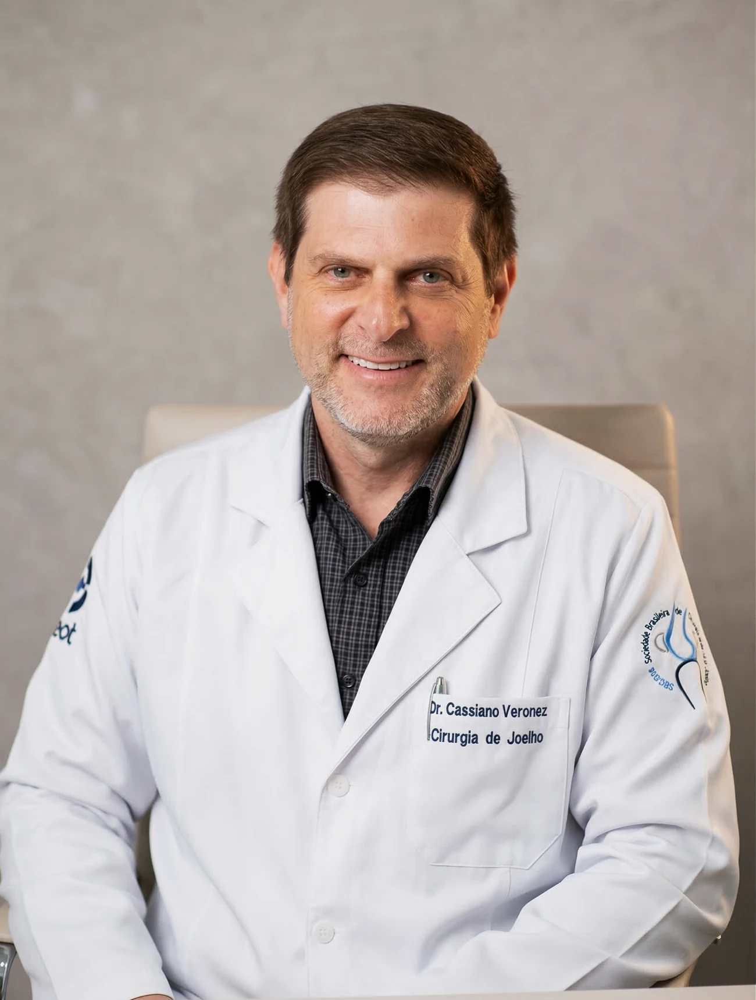

Tratamento Avançado para Lesões, Desgaste e Dor no Joelho em Cascavel
Convive com dores diárias, estalos, inchaço ou dificuldade para subir e descer escadas? Obtenha um diagnóstico exato e tratamentos modernos, desde a infiltração articular até cirurgias minimamente invasivas. Tudo focado em devolver a sua mobilidade com total segurança.

Dr. Cassiano Veronezi
CRM-PR 27666 | RQE 18908
Quando procurar um ortopedista do joelho?
Não ignore as dores que limitam seu dia a dia. Identificar o problema cedo é a chave para uma recuperação mais rápida e menos invasiva.
Pane, Estalos e Inchaço
Sente que o joelho "falha" ou escuta estalos acompanhados de dor? Isso pode indicar lesões de ligamento (LCA) ou menisco.
Dificuldade de Movimento
Rigidez matinal ou dificuldade para subir e descer escadas são sinais comuns de artrose ou processos degenerativos.
Traumas Esportivos
Dores agudas após atividades físicas ou entorses necessitam de avaliação imediata para evitar agravamento da lesão.
Nossos Serviços
Lesão Ligamentar
Cirurgia de Ligamento (LCA)
Para quem rompeu o ligamento do joelho em queda, futebol ou acidente. Devolve a estabilidade pra voltar a correr, treinar e jogar sem medo de "falhar".
Artrose Avançada
Prótese de Joelho
Para quem convive há anos com dor de desgaste, dificuldade pra caminhar ou subir escadas. Substitui a articulação gasta e devolve mobilidade no dia a dia.
Cirurgia Minimamente Invasiva
Cirurgia de Menisco
Para quem sente dor aguda, "trava" o joelho ou tem estalos após torção. Cirurgia por vídeo com pequenos cortes e recuperação rápida.
Sem Cirurgia
Infiltração para Dor no Joelho
Alternativa à cirurgia em muitos casos. Aplicação de ácido hialurônico que "lubrifica" o joelho, alivia a dor e melhora o movimento de quem tem desgaste de cartilagem.
Alinhamento do Joelho
Correção de Joelho Torto
Para pacientes mais jovens com desgaste em uma única região do joelho. Corrige o alinhamento, alivia a dor e adia a necessidade de prótese.
Rótula que Sai do Lugar
Instabilidade da Patela
Para quem já teve a rótula "deslocada" mais de uma vez ou sente o joelho fugir do lugar. Tratamento e cirurgia pra acabar com o medo de cair.
Dr. Cassiano Veronezi
O Dr. Cassiano Veronezi (CRM-PR 27666 / RQE 18908) é médico Ortopedista e Traumatologista, especialista em Cirurgia do Joelho com atendimento em Cascavel/PR.
Membro Titular da Sociedade Brasileira de Ortopedia e Traumatologia (SBOT) e da Sociedade Brasileira de Cirurgia do Joelho (SBCJ), o Dr. Cassiano une o rigor acadêmico como Preceptor de Residência Médica à prática clínica avançada.
- Cirurgia do Joelho
- Tratamento de LCA
- Prótese e Artrose
- Lesões Esportivas
Como funciona o atendimento
Do primeiro contato à recuperação completa, um processo simples e transparente em quatro passos.
Agende pelo WhatsApp
Fale com nossa secretária via WhatsApp, escolha o melhor horário e tire dúvidas sobre convênios particulares.
Consulta e Diagnóstico
Avaliação completa do seu joelho, análise de exames e diagnóstico preciso, com tempo para esclarecer suas dúvidas.
Plano de Tratamento
Definição do tratamento mais indicado para o seu caso — do tratamento sem cirurgia até procedimentos cirúrgicos modernos.
Recuperação e Retorno
Acompanhamento ao longo de toda a reabilitação, com retornos para garantir o melhor resultado e seu retorno às atividades.
Histórias de Sucesso
A maior satisfação do Dr. Cassiano é ver seus pacientes retomando suas atividades favoritas sem limitações.
"Fiz a cirurgia de LCA com o Dr. Cassiano e a recuperação foi surpreendente. Em poucos meses já estava voltando a treinar com total segurança. Um profissional humano e extremamente técnico."
Ricardo Mendes
Atleta Amador
"Depois de anos sofrendo com artrose no joelho, a cirurgia de prótese mudou minha vida. Voltei a caminhar sem dor e a brincar com meus netos. Gratidão eterna ao Dr. Cassiano."
Maria Silveira
Aposentada
"Excelente atendimento desde a primeira consulta. O Dr. explicou todo o diagnóstico de menisco com calma e me deu segurança para o tratamento. Recomendo muito!"
João Pedro Lima
Empresário
Dúvidas Frequentes
Preparamos respostas para as perguntas mais comuns de nossos pacientes.